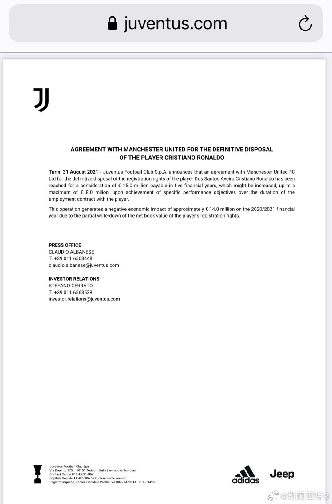

所以大难临头了卡尔扎伊也不会站出来挺政府？这是已经被塔利班统战了还是加尼太过无能就这样也不愿意放下身段？

斯图亚特9
2021-08-31
斯图亚特9
2021-08-31
人民网转载的这篇文章反应政策导向吗？  每个人都能感受到，一场深刻的变革正在进行！
每个人都能感受到，一场深刻的变革正在进行！
斯图亚特9
2021-08-31
所以尤文卖C罗账也没打平。4年折旧剩的2900万欧账还要亏进去一半……
- 
斯图亚特9
2021-08-31
尤文买C罗真是干了件财力不允许的事。砸锅卖铁买了用不起的C罗三年。三年之后一看，锅和炒菜刀都没有了怎么办？